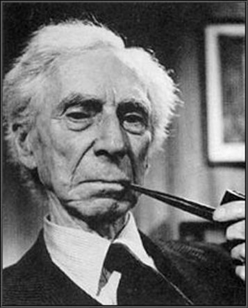
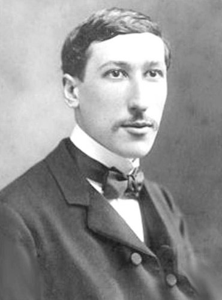

Karl Popper
Era: Século XX
Origem: Vienna, Austria-Hungary
Idioma: Alemão
Download
Kurt Friedrich Gödel
Era: Século XX
Origem: Brünn, Austria-Hungary
Idioma: Alemão
Download
Bertrand Russell

Era: Século XX
Origem: Trellech, Monmouthshire, UK
Idioma: Inglês
Download
René Guénon

Era: Século XX
Origem: Blois, Loir-et-Cher, France
Idioma: Francês
Download